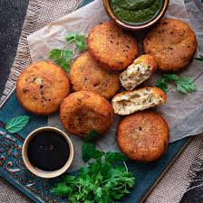

Onion rings

Onion rings recipe
Ingredients
- Onion
- Pepper
- Salt
- Rice flour
- Chilli powder
- Maida
- Garlic paste
- Milk
- Bread crumbs
Method to cook
- Take onion and cut the into rings.
- Take a bowl and add rice flour,maida,salt,pepper,garlic paste,chilli powder .
- Pour the milk and egg.
- Mix all ingredients together.
- Take the rings and dip into the mixture.
- coat them with the bread crumbs.
- Refrigerate it for 15 minutes.
- Take a fry pan, pour some oil and heat it.
- Fry the rings until they get golden brown in color.
- Onion rings is ready!
Back to Home
other recipes
